Phase 5 · 同一母版的局部动作候选
轻跃保留你认可的4px幅度。现已修正局部裁片滤波支持域：轻跃51像素、左右小步各2像素改变，最多1个RGB通道值；全部alpha、源脸衣结构、相机、轨迹和时长精确不变。原4px确认候选与8px参照均冻结，现用修复版不冒称与它们逐像素相同。jumping默认左冻结8px、右现用4px，同钟同格。批准仅限幅度，手势硬切、落地恢复和完整自然度未通过。修复前输入 · 逐格差异证据 · 准确决定范围
右侧可选九个动作候选；左侧通常固定v3，小步/轻跃/failed则默认同节奏旧版对照。failed已采用你认可的新嘴线，旧嘴线仅作冻结参照；批准范围仅限开发基础。小步比较耳发跟随，轻跃默认比较8px/4px幅度，也可手选屈膝接触对照。所有候选共用相机与脸型；新增像素仅用于局部结构修正、缺画与隐藏底图。正面小步方向、摆幅及起落基础已确认，托腮/合手暂保留保持时序；这些决定不代表手形、袖褶或整体自然度通过。九状态和16视线为开发验收图集，未安装。
新增“精度对照”：左侧为现用动作，右侧为同源、同姿势、同格的末端浮点采样试验，尚未采用。73个动作/视线格全部核对；相对独立64位滤波参考的平均显示颜色误差约0.358→0.128（0–255单位），不是画质评分。113px肉眼差异小，没有新增细节、帧率或分辨率；不修复手袖造型。九状态明暗前后对照 · 逐格证据和限制
同一母版 · 固定第 1 帧
同一母版 · 六帧微呼吸
idle 周期 6.6 秒；failed 1.22 秒、jumping 0.84 秒、waving 0.7 秒、processing 0.82 秒、waiting 1.01 秒、review 1.03 秒，动作均三轮后回 idle。jumping 最高离地4px，仅着地格鞋部固定。waving 末格为原图放松，停留 280 ms；过渡偏向放松。processing 对应宿主 running 行。waiting/review 身体与手势保持，只做微小耳发响应；review 仅在原眼开口内移虹膜，不改眼眶或脸型。短周期不做快呼吸或胸饰闪烁。静态关键姿势不等于完整手臂骨骼：托腮/合手的入场和回 idle 仍缺过渡，80 px 状态差异弱，review 右手更展开、新袖褶的边界融合仍待确认、前景保护多边形不是干净图层。所有动作的可爱感、接缝和节奏仍待视觉认可。
waiting 当前合成v2收束抬袖鼓包并调整完整垂袖褶线，仅采用有界衣料及轮廓旁少量遮挡底图；手、脸、肩披与主体保留原样。此处alpha确有局部变化，不是仅改RGB。review 当前仍为合成 v6（母版锁定 v3），只替换两袖连续内部；手、轮廓及全部alpha保持v5。两种处理不能混称。结构、边界融合及完整动作仍待确认，保持时序没有变。
集中查看当前托腮/合手结构 · 指尖修正113px明暗对照 · GIMP可编辑图层工程 · 具体限制与缺陷
左右小步为八格、1060 ms一轮。此处模拟状态未被打断时的三轮3180 ms后回 idle；真实宿主的左右跑是拖拽反馈，松手可中断任意格，若仍悬停则恢复jumping，否则恢复底层任务状态。不一定 idle，也不会等待脚落地；完整选择规则另见下方全局中断验收。图集没有速度输入，不能保证鼠标拖动中的屏幕地面防滑。向支撑侧的身体横向摆幅仍为你认可的约1.9原生像素，下沉最多0.24像素。你对最新起落节奏回复“我觉得还行”，仅作为后续打磨基础，不扩大为完整自然度或其他动作通过。脸型、衣服与手保留刚性跟随，支撑兔鞋的位移与身体位移抵消。当前耳尖/发梢增加由身体横移驱动的微小滞后，上限约0.13/0.32原生像素；按实际120/220ms停留取样，身体不动时不会自行摇摆。它不是实测质量中心或已证明的物理平衡。抬脚仍约1.19像素，80 px提示弱。
当前每侧均有缓升→峰值→接近→接触；左脚在第5格着地，右脚在下一轮第1格（最后一轮直接回idle）着地。删除人为的首尾像素相等规则，首尾不再相同，但相机与脸型仍固定。着地前离地约0.31/0.41原生像素；右侧因末格220ms而不对称，比上轮0.31略高。身体最大相邻横移由1.9降为约1.27像素，最大脚部垂直跳变约0.88像素，不是审美评分。新增缓升姿态并不等于连续起落或真实零速度触地；周期边界、三轮回idle和任意拖拽退出仍待整体视觉接受。
当前从leg-material-v2原材料直接取样到原生3倍覆盖网格，再统一末端缩小，不把全尺寸腿部姿势图当输入；虹膜仍有源空间预合成，不声称全画单次采样。可见背景按覆盖率归一后，分数坐标的同材料中性合成成立；只在各姿势中消除低于1e-10的浮点叠加误差，中性原生RGBA与原取样器精确一致，不特判零位移。耳发几何也在原背景材料取样前计算，不再加工低清帧；保护脸/前衣袖/手/腿鞋，但区域仍是估计，不是干净分层。微滞后来自周期稳态参考，不会按每次真实拖拽初始化；原生仍离散，衣物柔性跟随、进入退出和完整自然度未通过。侧身不是所选方向，不把中性等式或格内支撑固定当作真实跑步完成。
母版/旧中性/新中性/左右抬脚对照 · 向右小步真实停留GIF · 无脸隐藏底图实际生成提示词 · 合成修正与剩余问题
全局中断验收 · 底层任务 / 悬停轻跃 / 拖拽 / 方向覆盖
用当前完整开发图集检查真实规则下的硬切。左侧冻结切换前一格，右侧播放当前选择，不是两动作同步比较。优先级：拖拽覆盖 → 悬停轻跃 → 底层任务。松手或离开可随时恢复底层选择，不等脚落地，也不保证idle；底层本来就是jumping时，离开不会重启动作。
仅idle/processing（宿主running）/waving接受方向覆盖；方向移除会从当前选择首格重启。方向格在减少动态下仍可显示。有效属性改变才重启；同一拖拽覆盖期间改变底层任务，动作槽继续。这里按宿主每个停留链式计时，迟到回调只前进一格，不像顶部单行理想时钟追赶漏帧。规则来自本机代码只读复核，不是实际浮层事件/性能录像，不修改宿主或图集、不补间，也不代表完整自然度通过。
本机实际成员哈希与自述规则 · 完整未完成目标。这些控件只模拟输入选择；真实屏幕拖动速度、任务通知排序与上游方向对象刷新频率不在本页证明范围内。
failed 新嘴线 · 已采用为开发基础，完整动作待验收
左为锁定母版，中为旧嘴线，右为已获你认可的新嘴线开发基础。未重画眼睛、眉、下颌或衣服，也不缩放脸；仅采用1254个内部RGB像素，全身alpha及范围外RGBA保持。批准范围仅限嘴线，不代表眉眼、完整动作、小尺寸表达或安装通过。


阈值诊断线宽37→46源像素，母版笑线54；没有为了达到数值而继续改画。80px辨识仍有限，阈值不定义选区或美感。顶部选择failed，默认左侧冻结旧嘴线、右侧现用新嘴线；真实八格140×7＋240ms共用格号/姿态，三轮3660ms后同步回idle。仅更新failed及其全局开发图集；采样试验同步重建但仍未采用。母版、其他动作、视线、已安装文件不改。
80px实际对照 · 224px实际对照 · 实际内置图像编辑提示词 · 八格范围/来源/时序证据。只重建源像素，不加工低清动作帧；每格仅60–67原生RGB像素变化，alpha固定。这里也改变许可内附近皮肤RGB，不冒称只修改棕色线像素。
轻跃接触改进 · 同参数高度场 / 双节屈膝对照
上为旧高度形变，下为当前双节腿部，两列为蓄力和落地。身体下沉仍为0.8/0.25原生像素；双脚目标固定，原鞋材质不缩放。局部支持域修复后，三格空中RGBA与同姿态高度场精确相同；原4px候选上升/下降各18像素的旧差异由冻结输入与诊断保留。蓄力格另有15像素的1通道修正、落地格保持精确。脸型、轨迹、时长与安装宠物不变；这不证明任意形变、完整落地恢复或自然度。
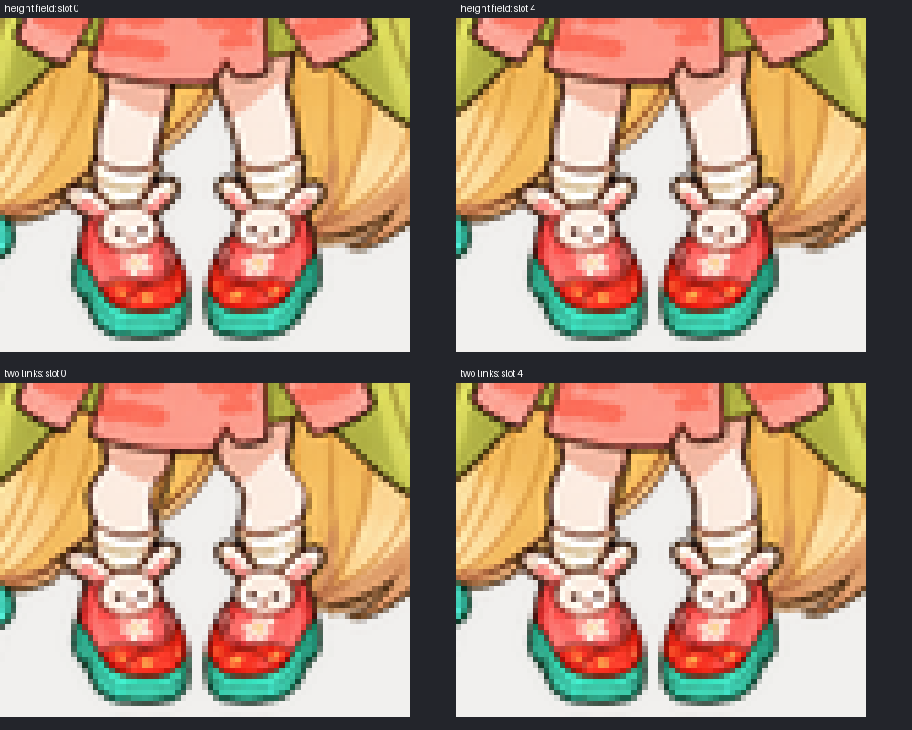
这是估计的正面二维骨架，不是实测力学、干净画师分层或完整自然度证明；隐藏头发、边缘与衣物柔性仍有局限。鞋的几何目标固定，不等于周围头发与混色边缘RGBA不变。只保留五格，落地没有格内恢复，周期与退出仍待。113px明暗对照 · 实际对照契约
当前托腮 / 低位双手 · 静态结构复核
左为当前idle，中为waiting托腮，右为review低位双手下视；目前两手未真正相合，不把它称为完成的合手动作。每张都直接来自当前动作条的第1格，224px明暗背景；不是下面的新头发试验。保持时序已暂时接受，但实际脸、手与衣袖关系仍需确认。腰间白色月纹在母版就存在，不是旧手残留或多余袖口。
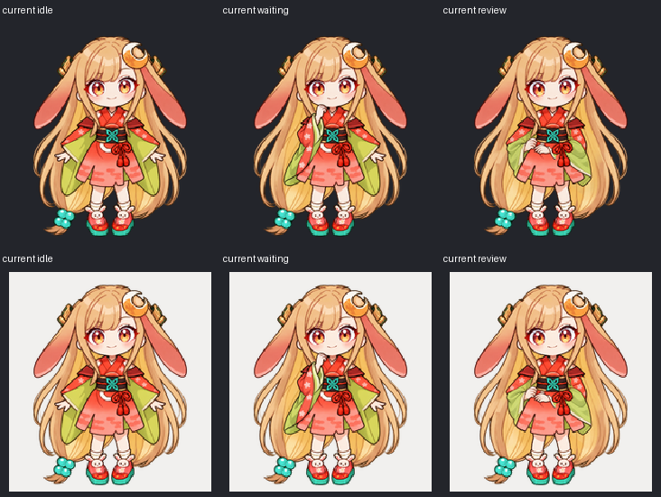
新静态候选 · 腰前轻柔相叠（未接入动画）
这次改变的是两手的接触关系：上方手轻放在另一手上，各自连接自己的袖口，不交叉握紧。下图依次为当前v6、整裁片原输出（未整块采用）、有界静态候选。保持同一源坐标、相机与锁定脸型；只改25,459个内部RGB像素，全身alpha与范围外像素不变。不是单独缩放手，也不是新脸或新状态。
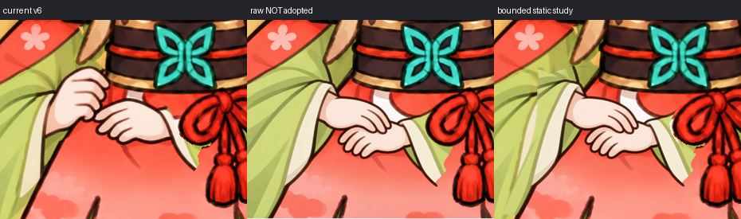
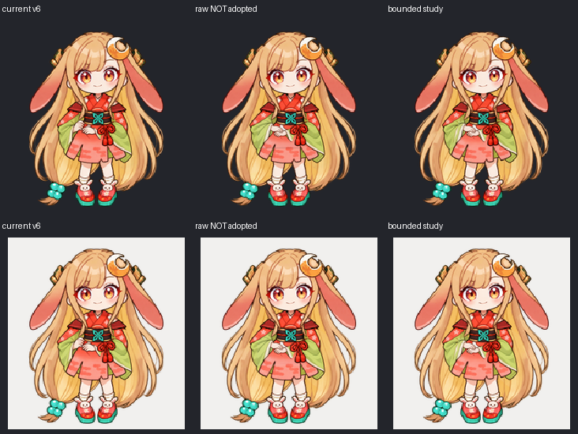
这三列是静态源姿势，不包含下视或耳发动作；主播放器的review仍为v6，保持时序与安装文件未改。腕口角度随新手势局部调整，不声称腕位逐像素固定。相叠造型、拇指/掌背体积、袖子接边与整体可爱感仍待判断；80px变化很小，不能说状态已经清楚可辨。
113px实际对照 · 80px实际对照 · 新静态候选的GIMP工程 · 实际无脸编辑提示词 · 范围及限制。工程通过GIMP批处理真正保存/重开，不冒称桌面画笔绘制或干净原画分层；修改权重需重算底层补偿。
保留失败证据：首版错误红结保护与内部透明度变化、第二版未覆盖完整袖口/月纹并夹入透明裁片边缘。原月纹不是袖口，保留在新手没有遮挡的区域；生成RGBA原文件不改。
当前改进 · waiting 抬袖与垂袖（开发合成 v2，待视觉认可）
左为此前waiting，右为当前开发版。固定腕口与手位，收束红袖鼓包，让垂袖沿同一布面下垂；53,583个源RGBA像素变化，其中12,314处alpha变化。只采用受限衣料与轮廓旁遮挡底图，手、脸、肩披、腰饰、另一侧身体及鞋不动。阴影仍偏硬，不声称布料力学或全部造型通过。
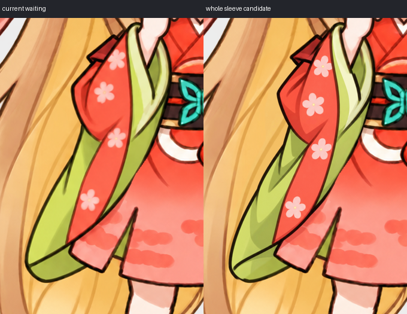
224px明暗对照 · 80px实际对照 · 当前waiting的GIMP图层工程 · 错误保护区造成花纹拼接的失败合成 · 来源、边界与限制。工程已实际保存/重开，可见RGBA精确匹配，859个透明隐藏RGB归零；修改权重须重算底层补偿，不是完整干净分层。已接入顶部waiting六格及开发图集，未安装。静态结构/整体自然度与进入退出仍未完成。
已接入开发动作 · 可见发丝的alpha漏修洞
左为母版真实可见发丝，中为此前合成v4，右为当前v5。两处亮点来自12个alpha=239的补片像素，被旧“当前alpha≥240”条件排除在修复域外；现按原图可见性与前景遮挡恢复原始RGBA。不是模糊、补画发束或更换母版，手/衣袖/脸与其他像素不动。
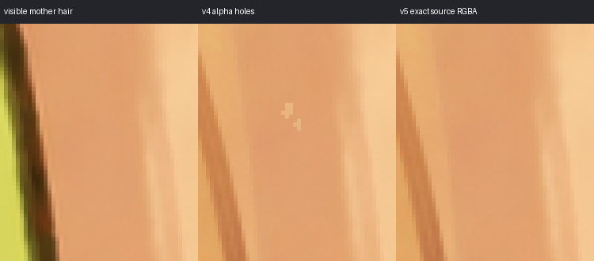
开发版review行及全局开发图集已同步，安装文件未改；此修复不代表完整发束、手袖造型或全部动作通过。192px明暗对照 · 精确来源与范围
头发边界试验 · 只用已观察到的头发约束，尚未采用
左为母版，中为此前静态合成v4，右为未采用候选；手、衣袖、脸与alpha完全不变，只改既有未知头发域的RGB。移除把衣袖/旧补片当头发观察的边界约束，使用490条真实源图接边；两个无观察锚点的孤立像素保持原状。它不包含上面的v5源像素修复。
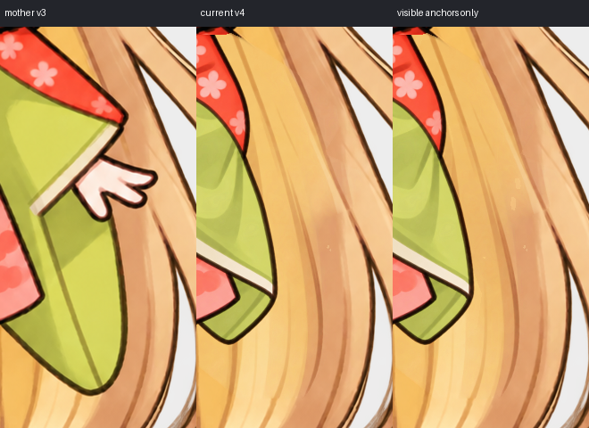
这只估计颜色连续性，没有恢复隐藏发束走向；仍有346个颜色通道裁切，局部亮斑/线条错接不能仅凭求解收敛宣布修复。未替换任何动作条、全局图集或安装文件。113px完整对照 · 实际约束与限制
原像素手袖运动试验 · 修正漏选袖边与头发约束，尚未采用
下图依次为上轮+6°、本轮+6°、上轮底图、本轮底图。补回221个漏选的原袖面/描边材料像素，排除把绿色衣服当作头发的错误约束；只用可见头发校正隐藏底图，并对部分平缓边缘估计梯度延长。没有新生成脸、手或袖子。
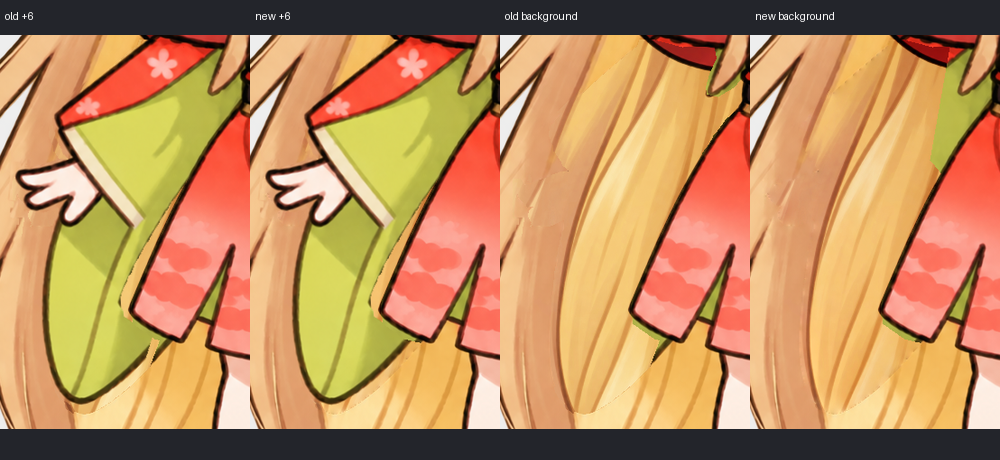
上方候选菜单新增“原像素低位试验”，按真实140/140/140/280 ms四格、700 ms×3后回idle播放；它是招手行的独立试验，不是第十个宿主状态，也没有替换现用招手或完整开发图集。静止由同一材料精确还原；脸型、原alpha、另一侧身体和鞋不变。
块状接缝与旧绿色袖边已减轻，但细发丝/下摆浅弧仍待，袖口上缘不是完全刚性共转；低位动作的招手表达、小尺寸清晰度和自然度未获接受。部分边界色是推断且发生通道裁切，不伪称完整原始分层或全部梯度连续。GIMP链接仍为上轮v2归档工程；最新v3材料已另存本地work工程并真实保存/重开验证，不能把旧公开XCF冒充新版本。
上轮真实GIMP工程（v2材料） · 本轮真实停留GIF（QA无限循环） · 113px明暗对照 · 证据、否定结果和限制
当前改进 · review 连续袖面（开发版 v6，待视觉认可）
左为此前v5，右为当前v6。先用无脸固定裁片生成同姿势衣料，再只采用连续绿袖内部：26,025个源RGB像素变化，alpha与外部完全不变。原始生成结果还重画了322,704个权限外像素，均未采用。不是把几块颜色补丁拼在不对齐的褶线上，也不是完整衣物模拟。
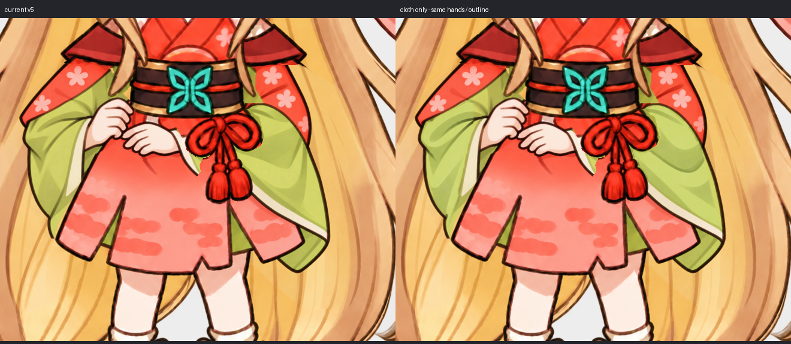
224px明暗对照 · 80px实际对照 · 当前GIMP图层工程 · 实际范围及限制。已接入顶部review六格及开发图集；未安装、未获完整造型/动作批准。
未采用的双手裁片 · 撤回月纹误诊，不替换当前动作
下图从左到右为实际母版、当前review v6、未采用的新裁片。浅色片是原腰间月纹被手遮挡后露出的部分，不是多余袖口。此前我没有先核对已有来源，错误地要求整理它；该指令撤回，原提示词保留。新的线条/明暗没有证明掌背、指节与腕口关系更好，也不能根据看不见拇指就断言缺指。
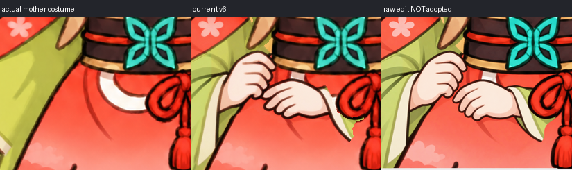
无脸固定方画布编辑，未接入任何动作或安装文件；当前review仍为v6。含已撤回指令的实际提示词 · 来源、实际投影与未采用理由
此前试验 · 连续袖面与GIMP工程（v1尚未采用）
下图左为当前合成v4，中为此前整张未采用的素材，右为本次连续袖面候选。手、脸、饰品及原alpha保持；只处理绿袖，未采用整张重绘，也未改上方动画。母版本来就有直线和三角阴影，不能把“有棱角”一概诊断为错误；此次主要避免补片边界截断褶线。
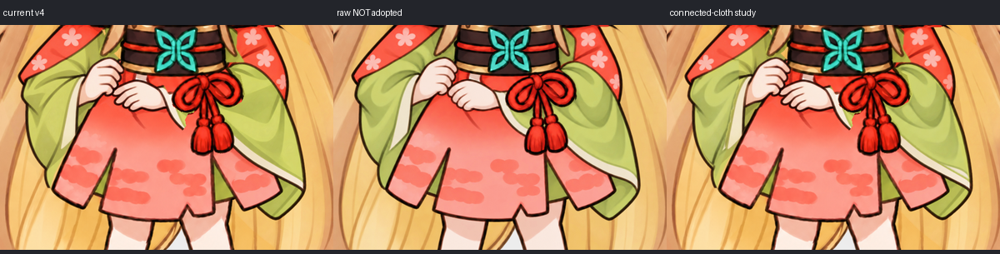
224px完整明暗对照 · 113px对照 · 真实可编辑GIMP工程 · 实际重开导出 · 逐点绿色选区造成斑驳的失败版本。工程已保存/重开，可见RGBA与候选完全一致；透明隐藏RGB有859处归零。连续选区仍非干净角色分层，袖口/外轮廓与新褶线是否合适仍待视觉确认，不称完整体积或动作已解决。
review · 指尖裁切修正与真实GIMP工程
下图依次为修正前合成v3、同坐标原素材（整张未采用）、有界轮廓修正。原素材的指尖是完整的，旧遮罩却切入轮廓；此前把缺口都归于手形是不准确的。当前开发动画和全局图集已同步局部修正，手腕、另一只手、脸型与相机不动，不代表袖褶或完整手势已通过。
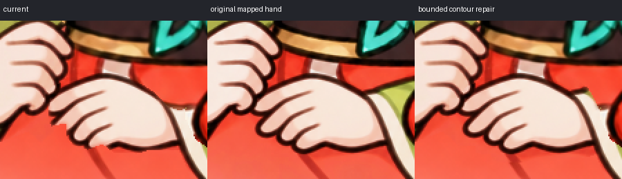
真实XCF图层与可编辑遮罩 · GIMP重开后的真实导出 · 实际尺寸明暗对照。编辑器正常叠加会重复计算素材alpha；当前工程使用浮点底层补偿遮罩，修改上层遮罩后须重新计算补偿。它不是完整角色rig。CI只核对归档哈希与导出证据，不重新运行GIMP。
review · 前轮原发丝恢复证据（不是新母版）
每排依次为锁定母版v3、历史合成v2、历史合成v3；当前主预览已为合成v4。2,931个已知发丝像素完整RGBA恢复，未知内部的颜色/透明度是连续性估计。剩余接缝、手形、袖褶与过渡仍未解决。
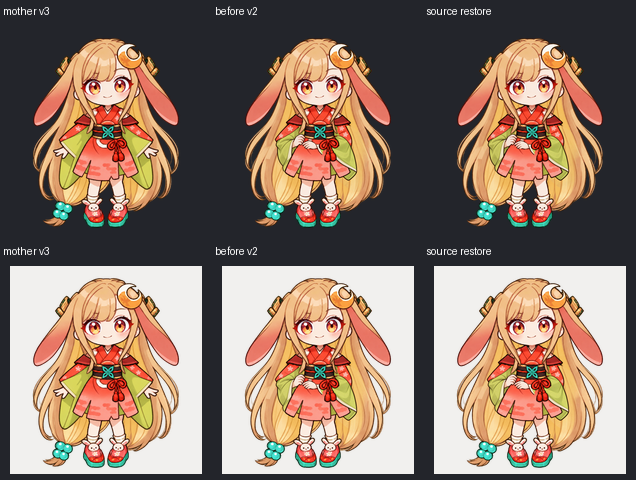
高清局部对照 · 直接复制失败/耦合修正 · 此前旧袖残影修正证据
未采用试验 · 手形与袖褶（中性精确不代表自然）
这是前轮未采用试验，图中current指当时合成v3；上方动作现在为合成v4，仅修正原素材轮廓裁切，没有采用缩短手形。下图依次为历史v3、原像素手层的中性重建、固定袖口的缩短候选。中性RGBA完全一致，但缩短后指尖/拇指关系仍别扭；不能把精确重建当成造型接受。
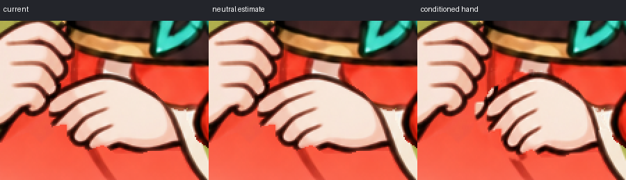
113px明暗对照 · 原像素朴素叠加失败：残边与61/255误差 · 整袖表面试作：新旧折线断接 · 无脸手袖实际AI提示词 · 手层重建数据与限制
未采用试验 · 隐藏发丝接缝（不替换当前动作）
这是未采用的历史试验，图中current v2是当时版本；目前主预览为合成v4。后两列均未采用：部分颜色衔接改善不足以解决发丝错接。其父alpha及手袖不变，不是视觉通过证明；当前没有使用这两张生成补片。
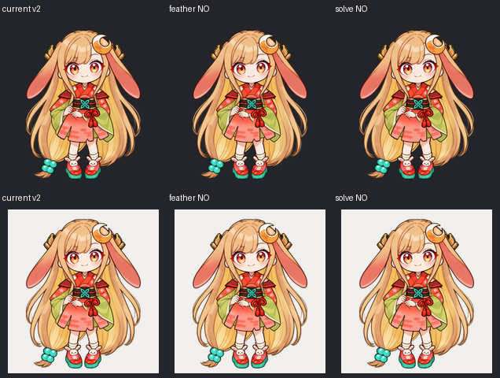
高清局部接缝对照 · 113 px对照 · 无脸局部素材实际生成提示词 · 未采用理由及保护范围
Phase 5 · 九状态全局结构对照（开发验收，不可安装）
九状态代表姿势，以113 px实际采样模拟展示，依次为 idle、左右小步、wave、jump、failed、waiting、processing、review；上三排深色、下三排浅色。它用于找脸身、衣袖、姿势的退步，不是视觉通过证明。完整开发图集为1536×2288，原生格192×208，解码RGBA仍14,057,472字节。
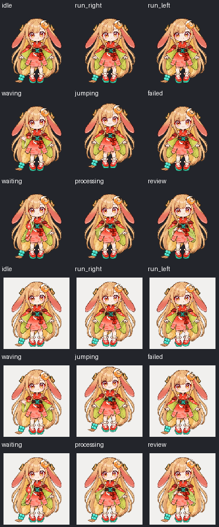
新嘴线汇总图集本机编码1,017,306字节，仅failed嘴周508像素变化，其他十行与全部alpha精确保留。此前相同旧画面编码实验1,098,260→1,017,692（7.34%）是历史记录，不混作新图与旧图同内容比较。仍是离线无损编码，解码14,057,472字节；不代表视觉、纹理内存或帧率改善。
完整开发验收图集 · 覆盖范围、未完成条件与逐行像素哈希 · 冻结本机实测及代价
Phase 5 · 十六个视线方向候选（点开验收）
同一 v3 母版，只平移原虹膜；眼眶、睫毛、眉、嘴、下颌、衣服、鞋与月饰固定。两眼原有差异保留，不做对称修正。最大位移源图 12×7 px，原生约 1.9×1.1 px；小尺寸辨认仍待验收。眼白底图是隐藏素材，不采用整张重画。
中性位置由同一分层合成，完整 RGBA 精确还原母版，不是特判返回源图。虹膜 matte 仍是从可见像素估计的边界，并非作者原始分层；人工视觉接受尚未确认。指针预览没有改变宿主优先级或原生帧率。
制作素材：左手臂后方隐藏底图（不是宠物姿势）
仅替换旧手和长袖遮挡区域，肩披、前发与脸保留母版像素。这里刻意没有左手/长袖，是后续动作的底层素材；不是要安装缺手版本，也不代表已完成关节或干净前景层。
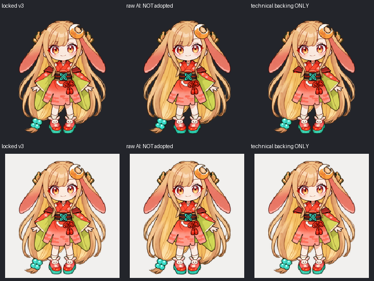
实际生成提示词 · 边界与未完成条件
已锁定母版 · 不再改脸型
采用你明确选择的“前一张轻收下颌的 AI 生成立绘”。完整头脸、耳饰、衣服与兔鞋均以这一张为依据，不回退到已否决试作。
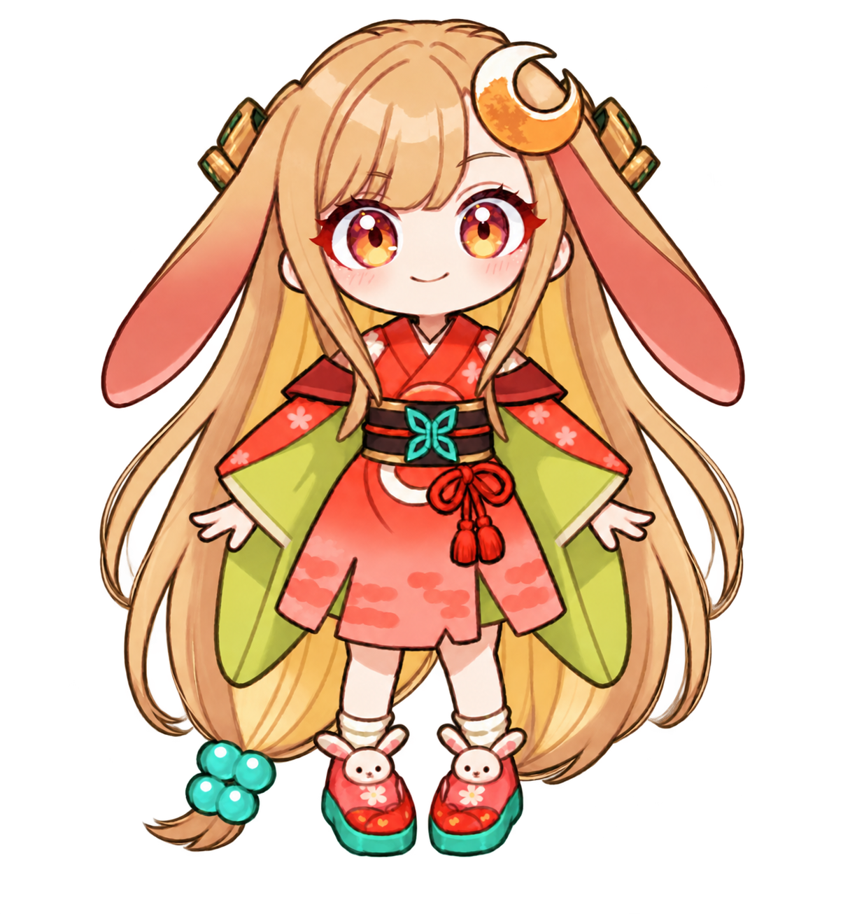
选定的完整生成立绘；仅缩放展示，未做脸型变形。
113 px 采样模拟，不是实机性能证明。
下一步：同一母版的可信分层、轻柔动画与实际时序验收。宿主仍使用 192 × 208 px/帧；静态确认不代表动作完成。
历史失败记录（默认收起，仅用于复核，不用于制作）
Phase 3 旧候选
Phase 4 静态试作 · 已否决